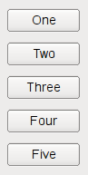
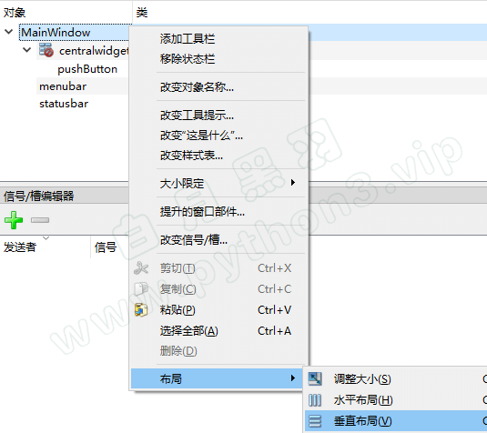

界面设计师 Qt Designer
Qt Designer 简介
QT程序界面的 一个个窗口、控件，就是像上面那样用相应的代码创建出来的。
但是，把你的脑海里的界面，用代码直接写出来，是有些困难的。
很多时候，运行时呈现的样子，不是我们要的。我们经常还要修改代码调整界面上控件的位置，再运行预览。反复多次这样操作。
可是这样，真的…太麻烦了。
其实，我们可以用QT界面生成器 Qt Designer ，拖拖拽拽就可以直观的创建出程序大体的界面。
怎么运行这个工具呢？
Windows下，运行 Python安装目录下 Scripts\pyside2-designer.exe 这个可执行文件
如果你安装的是pyqt5， 运行 Python安装目录下 Scripts\pyqt5designer.exe 这个可执行文件
通过 Qt Designer 设计的界面，最终是保存在一个ui文件中的。
大家可以打开这个ui文件看看，就是一个XML格式的界面定义。
动态加载UI文件
有了界面定义文件，我们的Python程序就可以从文件中加载UI定义，并且动态创建一个相应的窗口对象。
如下：
from PySide2.QtWidgets import QApplication, QMessageBox
from PySide2.QtUiTools import QUiLoader
class Stats:
def __init__(self):
# 从文件中加载UI定义
# 从 UI 定义中动态 创建一个相应的窗口对象
# 注意：里面的控件对象也成为窗口对象的属性了
# 比如 self.ui.button , self.ui.textEdit
self.ui = QUiLoader().load('main.ui')
self.ui.button.clicked.connect(self.handleCalc)
def handleCalc(self):
info = self.ui.textEdit.toPlainText()
salary_above_20k = ''
salary_below_20k = ''
for line in info.splitlines():
if not line.strip():
continue
parts = line.split(' ')
parts = [p for p in parts if p]
name, salary, age = parts
if int(salary) >= 20000:
salary_above_20k += name + '\n'
else:
salary_below_20k += name + '\n'
QMessageBox.about(self.ui,
'统计结果',
f'''薪资20000 以上的有：\n{salary_above_20k}
\n薪资20000 以下的有：\n{salary_below_20k}'''
)
app = QApplication([])
stats = Stats()
stats.ui.show()
app.exec_()
如果你使用的是PyQt5 而不是 PySide2，加载UI文件的代码如下
from PyQt5 import uic
class Stats:
def __init__(self):
# 从文件中加载UI定义
self.ui = uic.loadUi("main.ui")
转化 UI文件为 Python 代码
还有一种使用 UI 文件的方式：先把UI文件直接转化为包含界面定义的 Python 代码文件，然后在你的程序中使用定义界面的类
执行如下的命令把 UI 文件直接转化为包含界面定义的 Python 代码文件
pyside2-uic main.ui > ui_main.py
如果你安装的是PyQt5，执行如下格式的命令转化
pyuic5 main.ui > ui_main.py
然后在你的代码文件中这样使用定义界面的类
from PySide2.QtWidgets import QApplication, QMainWindow
from ui_main import Ui_MainWindow
class MainWindow(QMainWindow):
def __init__(self):
super().__init__()
# 使用ui文件导入定义界面类
self.ui = Ui_MainWindow()
# 初始化界面
self.ui.setupUi(self)
# 使用界面定义的控件，也是从ui里面访问
self.ui.webview.load('http://www.baidu.com')
app = QApplication([])
mainw = MainWindow()
mainw.show()
app.exec_()
那么我们该使用哪种方式比较好呢？动态加载还是转化为Python代码？
建议：通常采用动态加载比较方便，因为改动界面后，不需要转化，直接运行，特别方便。
但是，如果你的程序里面有非qt designer提供的控件， 这时候，需要在代码里面加上一些额外的声明，而且可能还会有奇怪的问题。往往就要采用转化Python代码的方法。
界面布局 Layout
我们前面写的界面程序有个问题，如果你用鼠标拖拽主窗口边框右下角，进行缩放，就会发现里面的控件一直保持原有大小不变。这样会很难看。
我们通常希望，随着主窗口的缩放， 界面里面的控件、控件之间的距离也相应的进行缩放。
Qt是通过界面布局 Layout 类来实现这种功能的。
我们最常用的 Layout布局 有4种，分别是
- QHBoxLayout 水平布局：把控件从左到右 水平横着摆放，如下所示

- QVBoxLayout 垂直布局：把控件从上到下竖着摆放，如下所示 
- QGridLayout 表格布局：把多个控件 格子状摆放，有的控件可以 占据多个格子，如下所示

- QFormLayout 表单布局：表单就像一个只有两列的表格，非常适合填写注册表单这种类型的界面，如下所示

MainWindow 的 Layout
如果我们选择的主窗口是MainWindow类型，要给MainWindow整体设定Layout，必须先添加一个控件到 centralwidget 下面 ，如下

然后才能右键点击 MainWindow，选择布局，如下

调整控件位置和大小
调整 layout 中控件的大小比例
可以通过设定控件的 sizePolicy 给不同的值来调整。调整控件间距
要调整控件上下间距，可以给控件添加layout，然后通过设定layout的上下的padding 和 margin 来调整间距。
要调整控件的左右间距，可以通过添加 horizontal spacer （弹簧）进行控制，也可以通过layout的左右margin。调整控件次序
有的时候 我们需要调整一个layout里面，控件的上下显示次序，或者左右显示次序，该怎么做呢？
如果是简单的两个控件在 layout里面，通常直接拖动就行了。
界面布局步骤建议
先不使用任何 Layout，把所有控件按位置摆放在界面上
然后先从 最内层开始 进行控件的 Layout 设定
逐步拓展到外层 进行控件的 Layout设定
最后调整 layout中控件的大小比例， 优先使用 Layout的 layoutStrentch 属性来控制
从一个窗口跳转到另外一个窗口
程序开始的时候显示一个窗口（比如登录窗口），操作后进入到另外一个窗口，怎么做。
方法很简单，主要就是 实例化另外一个窗口，显示新窗口，关闭老窗口。
如下代码所示
from PySide2 import QtWidgets
import sys
class Window2(QtWidgets.QMainWindow):
def __init__(self):
super().__init__()
self.setWindowTitle('窗口2')
centralWidget = QtWidgets.QWidget()
self.setCentralWidget(centralWidget)
button = QtWidgets.QPushButton('按钮2')
grid = QtWidgets.QGridLayout(centralWidget)
grid.addWidget(button)
class MainWindow(QtWidgets.QMainWindow):
def __init__(self):
super().__init__()
self.setWindowTitle('窗口1')
centralWidget = QtWidgets.QWidget()
self.setCentralWidget(centralWidget)
button = QtWidgets.QPushButton('打开新窗口')
button.clicked.connect(self.open_new_window)
grid = QtWidgets.QGridLayout(centralWidget)
grid.addWidget(button)
def open_new_window(self):
# 实例化另外一个窗口
self.window2 = Window2()
# 显示新窗口
self.window2.show()
# 关闭自己
self.close()
if __name__ == '__main__':
app = QtWidgets.QApplication(sys.argv)
window = MainWindow()
window.show()
sys.exit(app.exec_())
如果经常要在两个窗口来回跳转，可以使用 hide() 方法 隐藏窗口， 而不是 closes() 方法关闭窗口。 这样还有一个好处：被隐藏的窗口再次显示时，原来的操作内容还保存着，不会消失。
弹出模式对话框
有的时候，我们需要弹出一个模式对话框输入一些数据，然后回到 原窗口。
所谓模式对话框，就是弹出此对话框后， 原窗口就处于不可操作的状态，只有当模式对话框关闭才能继续。
参考如下代码
from PySide2 import QtWidgets
import sys
class MyDialog(QtWidgets.QDialog):
def __init__(self):
super().__init__()
self.setWindowTitle('模式对话框')
self.resize(500, 400)
self.textEdit = QtWidgets.QPlainTextEdit(self)
self.textEdit.setPlaceholderText("请输入薪资表")
self.textEdit.move(10, 25)
self.textEdit.resize(300, 350)
self.button = QtWidgets.QPushButton('统计', self)
self.button.move(380, 80)
class MainWindow(QtWidgets.QMainWindow):
def __init__(self):
super().__init__()
self.setWindowTitle('主窗口')
centralWidget = QtWidgets.QWidget()
self.setCentralWidget(centralWidget)
button = QtWidgets.QPushButton('打开模式对话框')
button.clicked.connect(self.open_new_window)
grid = QtWidgets.QGridLayout(centralWidget)
grid.addWidget(button)
def open_new_window(self):
# 实例化一个对话框类
self.dlg = MyDialog()
# 显示对话框，代码阻塞在这里，
# 等待对话框关闭后，才能继续往后执行
self.dlg.exec_()
if __name__ == '__main__':
app = QtWidgets.QApplication(sys.argv)
window = MainWindow()
window.show()
sys.exit(app.exec_())